Выбор сертификата. На выбор вам предложат все электронные сертификаты, которые записаны на ваш USB-токен. Выберите необходимый.
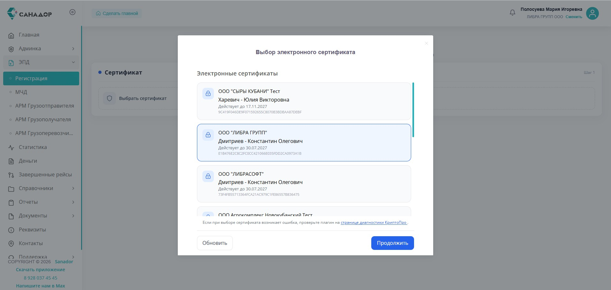
4
Дождитесь загрузки сертификата, при успехе данные подтянутся автоматически. Нажмите кнопку «Зарегистрироваться в ЭДО».
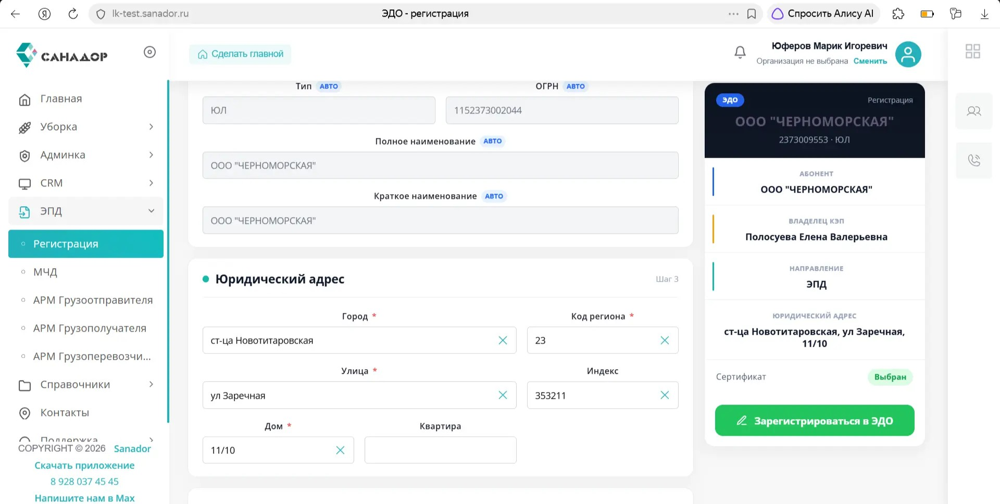
5
Создание МЧД. В левом боковом меню личного кабинета разверните вкладку ЭПД и выберите пункт МЧД.
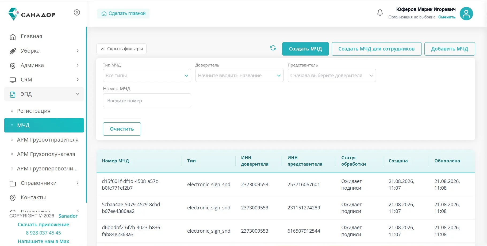
6
Создание новой доверенности: На открывшейся странице со списком доверенностей нажмите кнопку «Создать МЧД для сотрудников» (расположена в правом верхнем углу).
7
Заполнение параметров: В открывшемся окне на шаге «Параметры» будут указаны сроки доверенности, по умолчанию доверенность действует год. Нажмите «Далее».
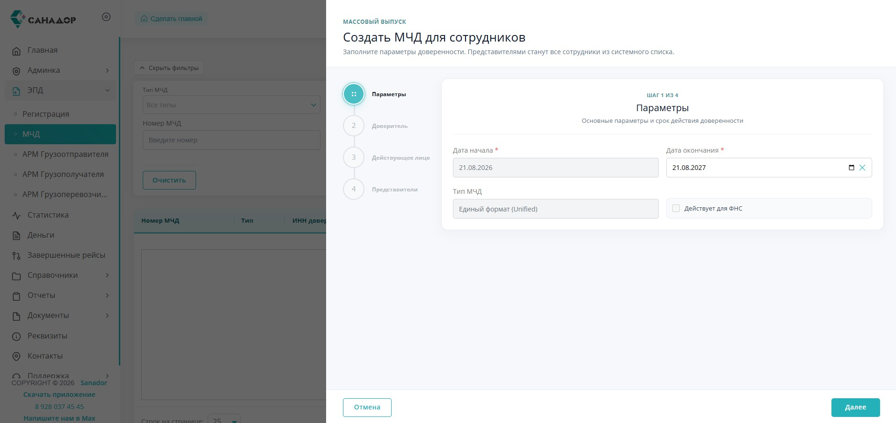
8
Подтверждение доступа через КриптоПро: Вам может потребоваться подтверждение доступа для сайта. Необходимо дать согласие на действие программы. Нажмите «Да».
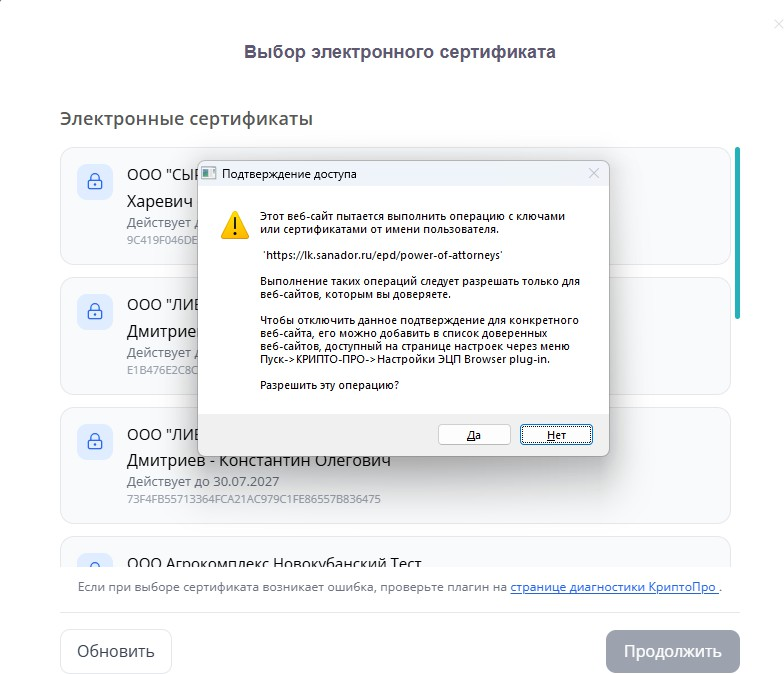
9
Выбор электронного сертификата. Выберите сертификат своей КЭП, чтобы перейти к следующему этапу.
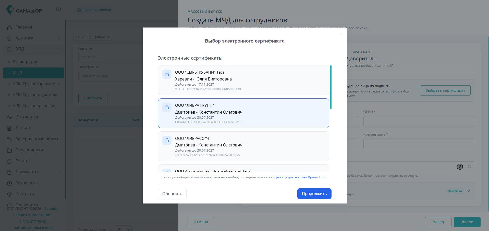
10
Заполнение сведений о доверителе. Все данные о вашей организации подтянутся из вашего USB-токена. Проверьте заполненность всех данных. Если необходимо заполнить детали адреса, сделайте это вручную. Затем нажмите «Далее».
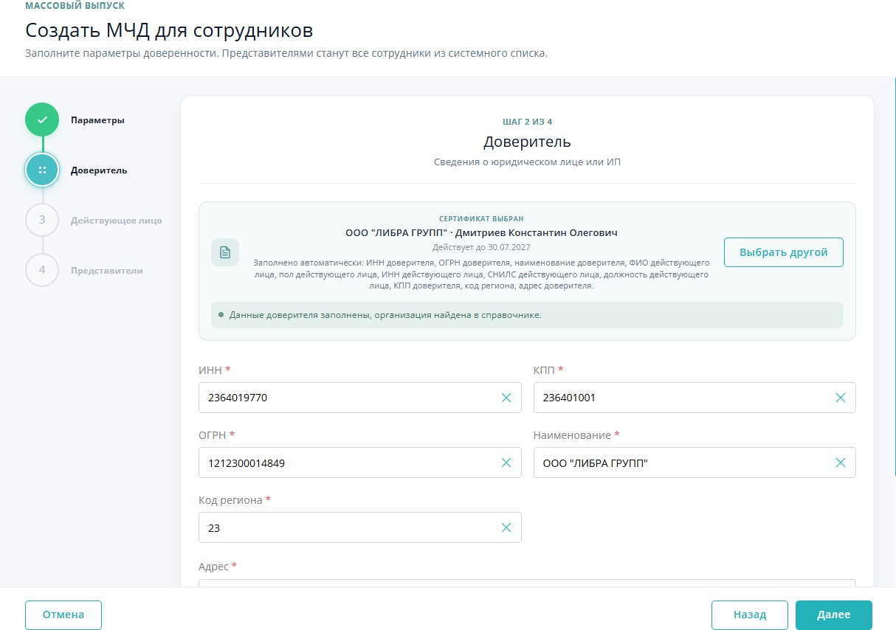
11
Проверка данных действующего лица. На этапе «Действующее лицо» проверьте или заполните данные сотрудника, действующего от имени доверителя (руководителя). Убедитесь, что поля с личной информацией (Пол, Фамилия, Имя, Отчество, ИНН, СНИЛС и Должность) заполнены корректно, если данные не подтянулись, введите вручную. После проверки нажмите кнопку «Далее».
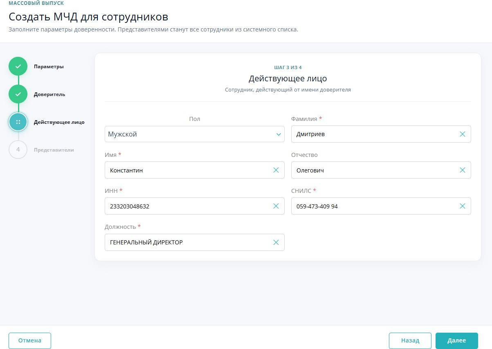
12
Проверка списка представителей. На этапе «Представители» (Шаг 4) система отобразит список сотрудников, на которых будет осуществлён выпуск МЧД, нажмите кнопку «Создать МЧД».
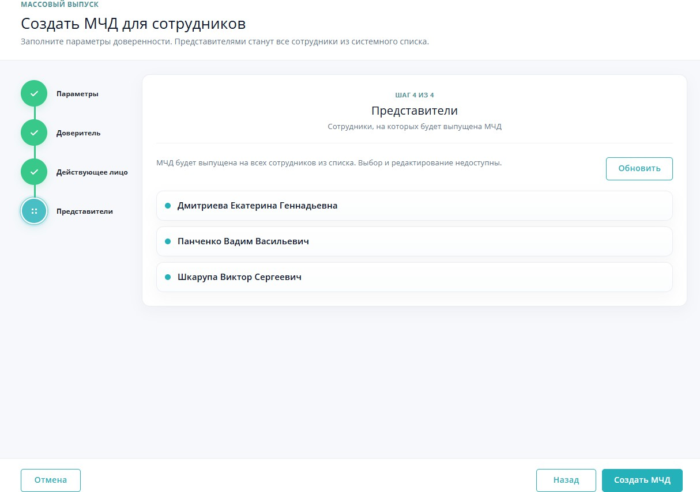
13
Отслеживание статуса МЧД.
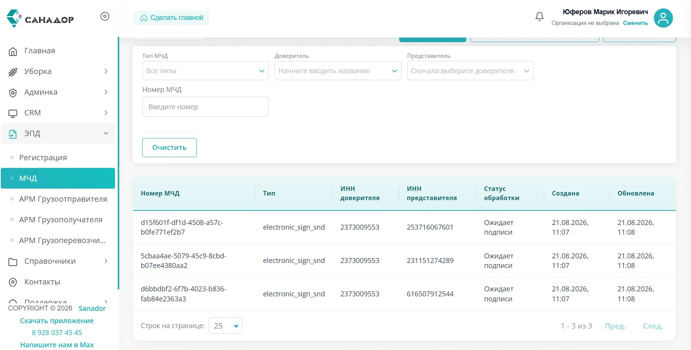
После нажатия кнопки «Создать МЧД» вернитесь в общий список доверенностей. Вам необходимо дождаться изменения статуса обработки на «Ожидает подписи». Используйте иконку обновления со стрелочками, чтобы проверить текущее состояние документа в реальном времени.
14
Переход к подписанию МЧД. Как только статус документа в реестре изменится на «Ожидает подписи», кликните по соответствующей строке, чтобы открыть детали. В карточке МЧД найдите блок «Действия с МЧД» и нажмите кнопку «Подписать МЧД».
⚠️ Необходимо подписать каждую из трёх МЧД по отдельности!
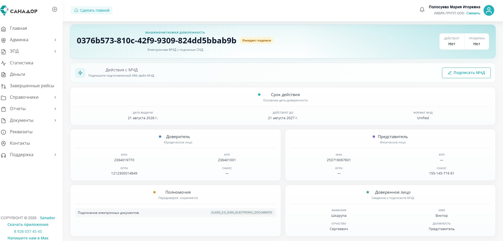
15
Подтверждение доступа через КриптоПро. Вам может потребоваться подтверждение доступа для сайта. Необходимо дать согласие на действие программы. Нажмите «Да».
16
Выбор электронного сертификата. Выберите сертификат своей КЭП, чтобы перейти к подписанию, нажмите кнопку «Продолжить».
17
Регистрация МЧД. Как только статус документа в реестре изменится на «Готова к регистрации», кликните по соответствующей строке, чтобы открыть детали. В карточке МЧД найдите блок «Действия с МЧД» и нажмите кнопку «Зарегистрировать МЧД».
⚠️ Необходимо подписать каждую из трёх МЧД по отдельности!
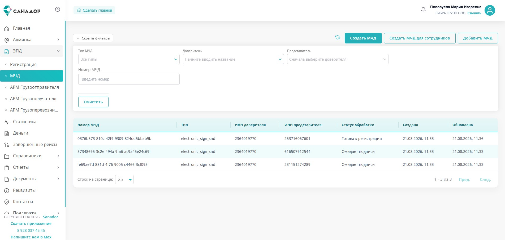
18
Убедитесь, что у всех доверенностей статус «Отправлена на регистрацию».
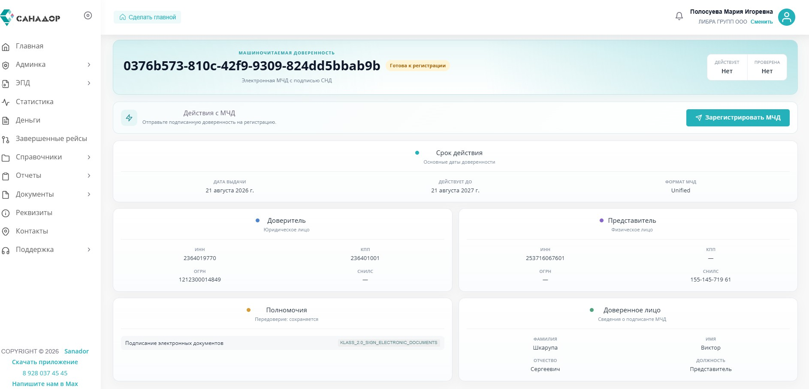
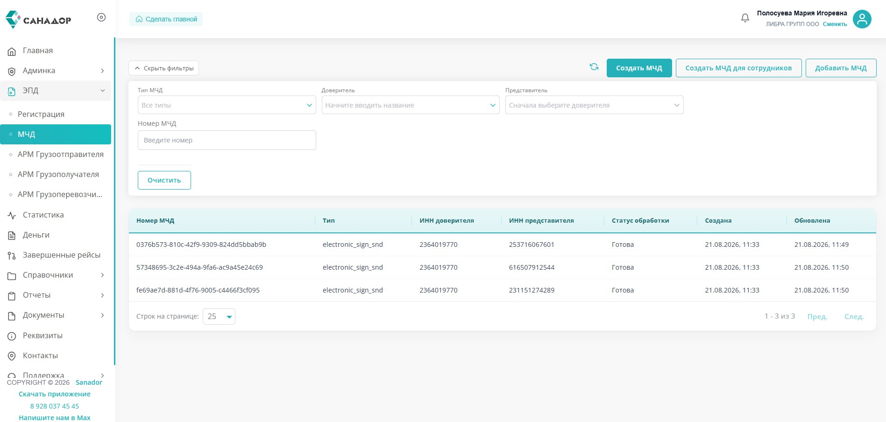
19
Успешное завершение регистрации. Периодически обновляйте страницу со списком МЧД. Как только в колонке «Статус обработки» появится итоговое «Готово», процесс выпуска машиночитаемой доверенности считается полностью завершённым. Документ действителен и готов к использованию в работе!
✅ Документ действителен и готов к использованию в работе!